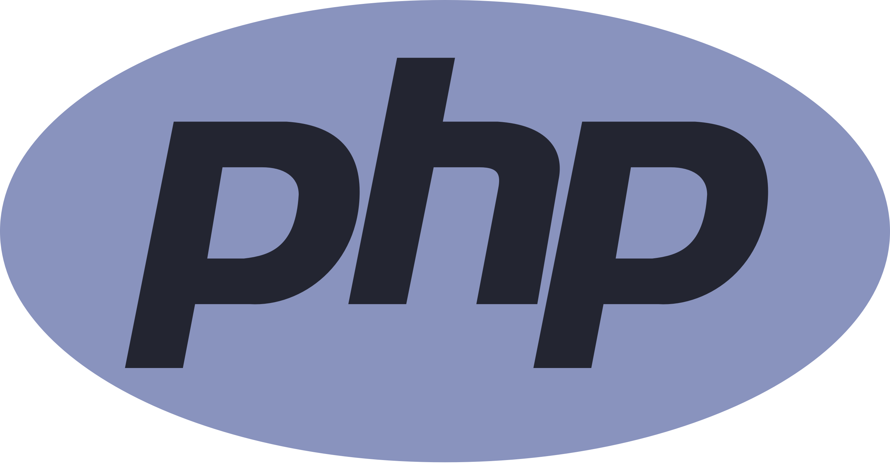
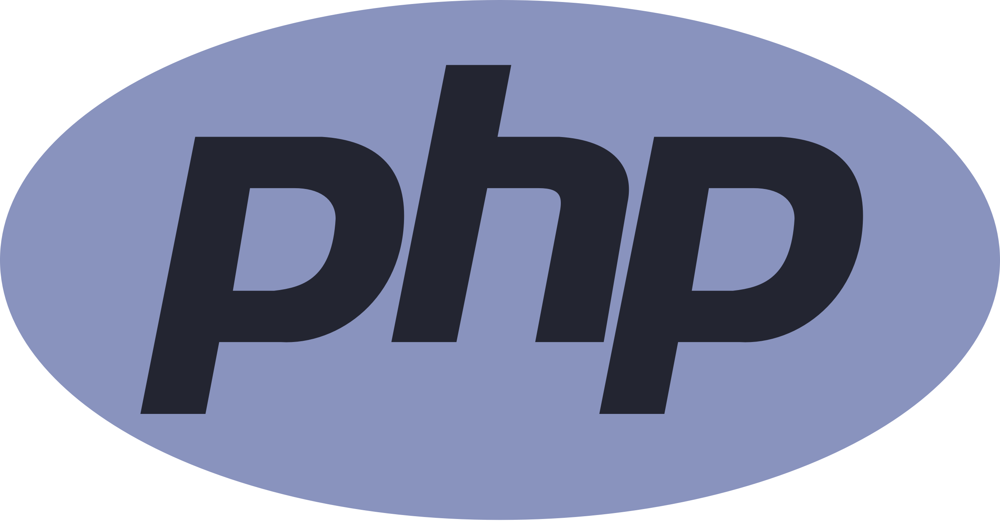

About Me
Get to Know About Me!
Hello everyone! My name is Rafli Muhamad Fakhreza, originally from Bekasi, West Java. I am a graduate of Informatics Engineering from Telkom University. I have a strong interest in software development, especially in Android, Web and UI/UX Design. To support my career interest, during my study I did some activities besides attending lectures, such as attending bootcamps, trainings, and courses that contain software development, such as Web and Android App. Previously, I had 4 months of experience as an outsourced worker at PT Tech Mayantara Asia working on Web Development projects for PT Telkom Indonesia (Persero), Tbk and I also had internship experience at PT Bank Rakyat Indonesia as a Front-end Web Development and UI/UX Designer. I also joined several committees and organizations to hone my soft skills, especially in terms of teamwork, problem solving, public speaking and creative thinking. I hope that the experience I gained during my studies can contribute to innovative projects, learn from a talented team, and grow professionally in a dynamic work environment. If you are interested in working with me, please feel free to contact me through the contact information provided.
Android Mobile Developer


UI Design Tools


Web Developer


 
